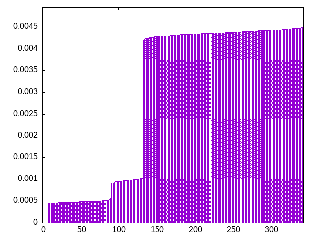
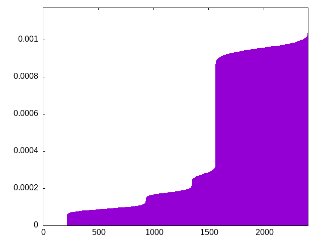
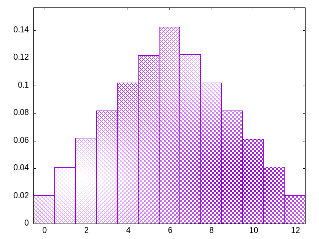
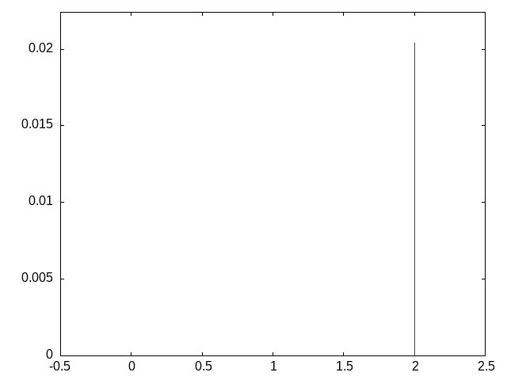

choose pieces from a bag, refilling when empty -- standard 7-piece bag
lisjtoztlosijzoliztsjloztsjisjitzolsojltizzisjltoslzjtioijtslozoijlstzlsjiotztjslziozojlsitzitjoslljsitzoiltozsjlsozijtjlsztioltzjiosjtoizlslzjtsoislojtizjtlsiozotljzsijlitszooztiljssitozjltosjzilozjitslolsiztjjtzisolotljzsizjoisltizosjtljtoiszlozilsjtjtlzioslzitsjotliosjzzsjlotizstoljilisoztjlioztjsijotzslostlijzjtsizolzjtilsozsjolitlsotizjtlsjiozotislzjoztijlsszotlijstzjloizjtlisotlziosjtoizjslzijltsozjoitslzijoltszijsotlojlitszlizosjtztlojiszsojtilstoiljzlzsojittjzsoilioljtszjzolstioszjitlijtslozsoizjtljtliozsjtlsziojzitosljstolziiljsztooltzsjiiotzsjljoltzsizlsijotozlsjtitzisoljtzojisltljsiozizlosjtotzlijsstozjiljloitszltjsiozisotzljtszojillizjtosiojlstztzijolstzoijsljolztsisijzoltszitoljiostljzzliojstzlsiojtlzisjotlijzstoltijoszolstjzilojtsziiotzjlsslotjizjostzliljtsizotojiszljzsiltootjzilsltjzosiltsizjoltizojszsioljtzjoiltssjziltotljoizszoijlstotjzilslizstjozjosiltlztiojstsjliozlosjzittojzilsiolzsjtzotsiljlztjioszisljotljoztisjiztlostozsljiojltiszzlisotjszolitjlotjiszolizsjtjtzsil
bagginess: 0.2055
bagginess6: 0.6841
distribution1_maxgap: 1.000000000001e-06
distribution2_maxgap: 0.020086020086020083
distribution3_maxgap: 0.003128006256012512
distribution4_maxgap: 0.0005320015960047879
diversity: 5.9
entropy: 10.514
evenness_diff: 5.898
evenness_same: 4.386
maxdrought: 12.0
maxflood: 2
peakdrought: 6.0
repchance: 0.0202
seq4_coverage: 0.9096
seq4_follow: 7.785
distribution3_graph:

distribution4_graph:

drought_graph:

flood_graph:

similarity: (lower is more similar)
| 0.001 | bag_pure |
| 0.010 | shift3_5 |
| 0.054 | weight_exp |
| 0.070 | weight |
| 0.071 | tgm |
| 0.082 | weight_exp_pure |
| 0.086 | tgm_pure |
| 0.117 | ti |
| 0.128 | tgm_tap |
| 0.130 | tgm_tap_pure |
| 0.131 | seamless_bag_pure |
| 0.132 | weight2 |
| 0.150 | deepbag_window4 |
| 0.169 | wet2 |
| 0.169 | wet3_size12 |
| 0.175 | weight_lin_pure |
| 0.179 | seamless_deep_pure |
| 0.183 | balanced5 |
| 0.290 | deepbag_fixed4 |
| 0.296 | bag2 |
| 0.306 | shift7 |
| 0.328 | deepbag_fixed7 |
| 0.467 | seamless_bag2_pure |
| 0.469 | wet_pure |
| 0.542 | deepbag_window7 |
| 0.573 | balanced7 |
| 0.604 | shift10_5 |
| 0.606 | nes_pure |
| 0.610 | seamless_bag3_pure |
| 0.615 | bag3 |
| 0.626 | wet |
| 0.638 | deepbag_window10 |
| 0.638 | deepbag_fixed10 |
| 0.657 | nes |
| 0.667 | balanced9 |
| 0.687 | shift14 |
| 0.693 | bag4 |
| 0.736 | balanced_long_add_pure |
| 0.764 | shift21 |
| 0.799 | balanced_long_mul_pure |
| 0.877 | wet3 |
| 1.051 | wet2_size100 |
| 1.053 | fullrandom_pure |
| 1.064 | fullrandom |
| 1.520 | shift1_75 |
| 3.108 | repeat_recent_pure |
| 5.219 | repeat_last_pure |
| 6.842 | flatbag |
| 6.842 | flatbag_pure |